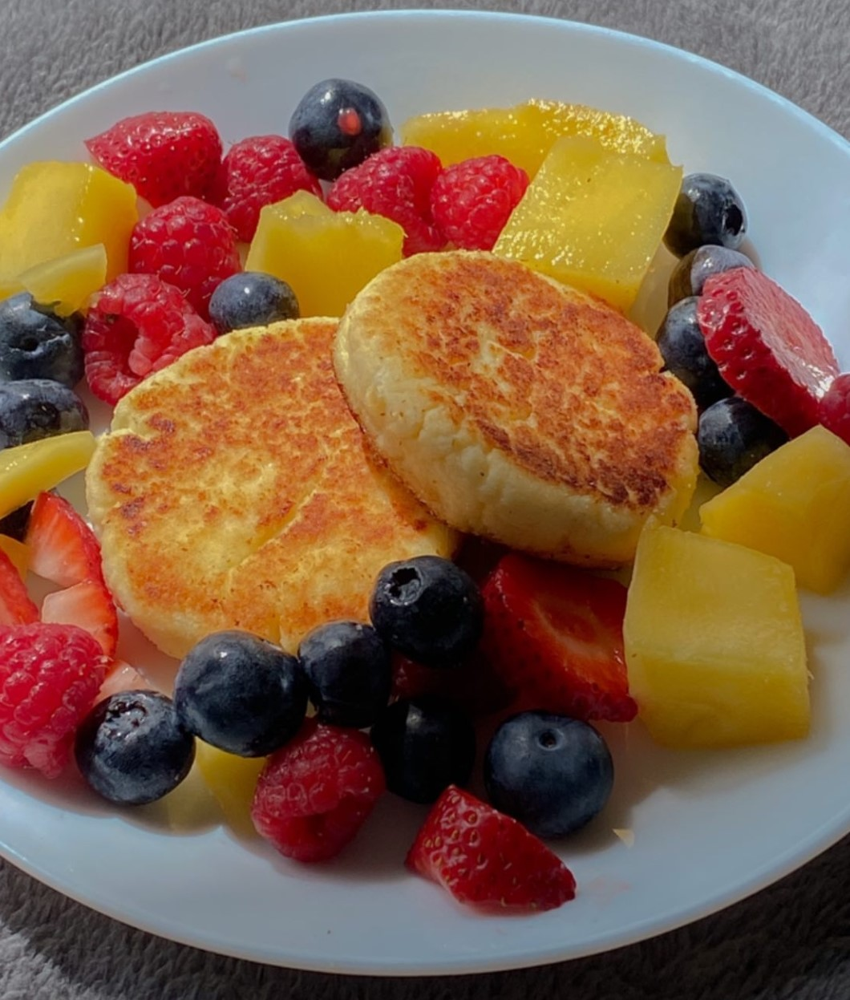

Ingrediente:
-1 ou
-500 g de brânză de vaci
-4 linguri de griș de grâu
-un praj de sare
-2 linguri de zahăr
-1 bucată de esență de vanilie
-50 ml ulei
1. Într-un bol puneți brânza, grișul, oul, zahărul, sarea și esența de vanilie - amestecați bine cu o lingură să fie compoziția uniformă.
2. Trebuie să vă iasă o compoziție moale și lipicioasă, dar care se ține bine - daca nu este așa, mai adăugați puțin griș sau făină.
Presărați mâinile cu făină și luați câte 1 lingură de compoziție în mână.
3. Cu amândouă mâinile formați o bilă, o treceți prin făină și o turtiți puțin de grosimea unui deget.
4. La fel faceți și restul papanașilor, le puneți la prăjit într-o tigaie încălzită bine cu puțin ulei.
5. Se rumenesc la foc mediu, pe ambele părți. Din această cantitate de brânză mi-au ieșit 12 bucăți.
6. Se pot servi cu dulceață, smântână sau fructe, așa cum am făcut eu.
Poftă bună, dragii mei! 🤗